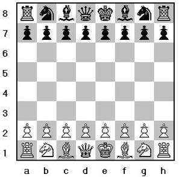

Surgimento do xadrez
Ele surgiu no sudoeste da Europa na segunda metade do século XV, durante o Renascimento Cultural.

Até nos dias de hoje,ele é considerado um dos jogos mais populares do mundo.
História do xadrez
Uma das história do xadrez,começa contando sobre um indiano chamado Sissa, que teria criado o jogo a pedido do rei Kaíde.O rei prometeu recompensar Sissa se ele conseguisse desenvolver um jogo realmente interessante. Ele pediu, como recompensa, que um grão de trigo fosse colocado na primeira casa do tabuleiro, dois na segunda casa, quatro na terceira e assim por diante, sempre multiplicando o número por dois até a última casa, que é a de número 64.O rei achou o pedido muito simples e concordou, mas ficou surpreso quando percebeu que a quantidade de trigo necessária chegava ao impressionante número de 18.446.744.073.709.551.615.

Peças do xadrez
O xadrez tem 32 peças,sendo,que são 16 para cima sendo pretas e 16 para baixo sendo brancas,além disso ,elas são divididas em duas torres,sendo que uma se localiza na direita e outra na esquerda do tabuleiro,elas se movimentação são para frente, para trás e para ambos os lados e também elas podem se deslocadas o número de casas que elas queira,como por exemplo: torre de B1 para B5 ;dois cavalos,sendo que uma se localiza na direita junto com a torre da direita e outra na esquerda junto com a torre da esquerda do tabuleiro,eles se movimentos deles são em forma de L;dois bispo,sendo que uma se localiza na direita junto com o cavalo da direita e outra na esquerda junto com o cavalo da esquerda do tabuleiro,eles podem se movimentar pelas diagonais e assim como a torre,eles também podem se deslocados o número de casas que eles queira como por exemplo: bispo de b2 para C6;o rei,se localiza na direita junto com o bispo da direita do tabuleiro; ele se movimenta para frente, para trás, para ambos os lados e pelas diagonais, mas ele tem uma diferença entre o bispoa,a torre e a rainha,que é a sua deslocação que funciona da seguite maneira que é a limitação quanto ao número de casas;e a rainha,se localiza na esquerda junto com o bispo da esquerda do tabuleiro; ela se movimenta para frente, para atrás,para ambos os lados e pelas diagonais,uma das semelhançacomo que,ela entre a torre e o bispo é deslocamento do número de casas que elas quiser como porem exemplo: rainha de B1 para B6 ou de C2 para C6;e os oito peõesque, estão localizados na feite das peças que já foram citadas anteriormente,elas só movimentam para feite.
